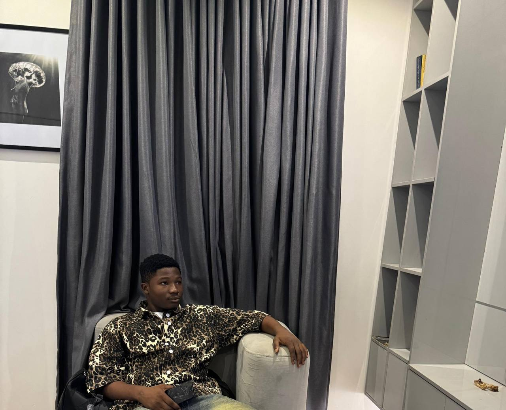

Welcome to My Portfolio.
Hi, I'm Omokaro Victory, a lifelong learner focused on growing professionally and personally. Dedicated to making a meaningful impact through my work. I'm also a team player, having earned a Bronze Medal in a University Football Match in 2022.

About Me
I specialize in creating user-friendly and innovative solutions. With a focus on web development, I bring ideas to life through code.
Email:Victoryomokaro14@gmail.com
Education
- Diploma in Maritime Studies, Information, & communication Technology - University of Benin (2022-2023)
Skills
- HTML : Creating structured webpages with headings, lists, and links
- Problem-solving through self-paced learning on Udemy and W3Schools
Award and Achievements
- Bronze Medal - University of Benin, Fresher's Cup 2021/2022 Session.
Work Experience
- Developed HTML webpages, including a personal portfolio and practice layouts, to apply web development skills
Projects
- Personal portfolio: Created a single-page HTML site to display my skills, Education, and achievements.